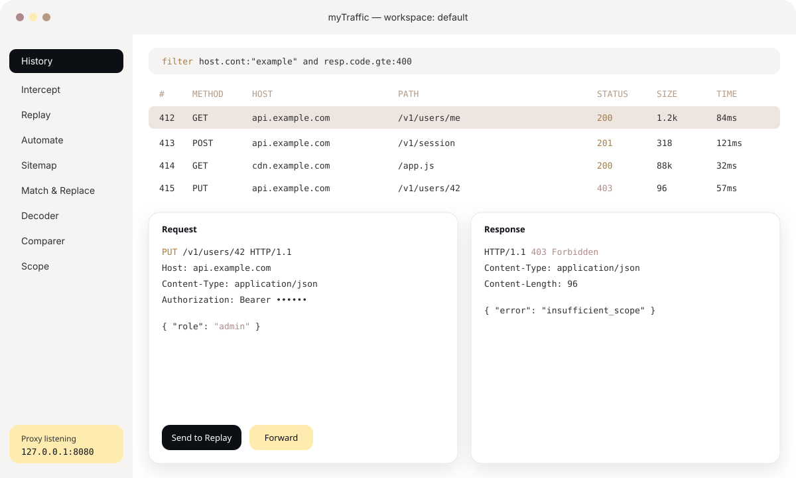

History
Every request and response in one searchable, sortable table with a precise query filter.
Open source · Local-first · 무료
myTraffic is a quiet, fast workbench for inspecting, replaying and understanding web traffic on your own machine. Every feature is free. No account, no cloud, no license keys.

Features 기능
Built for developers and testers who need to understand exactly what their apps send and receive.
Every request and response in one searchable, sortable table with a precise query filter.
Pause traffic, review it, and decide what happens next, one step at a time.
Re-send any request, tweak it in tabs, and compare responses side by side.
Run request lists with payload sets, throttling and result filtering, with no speed caps.
A live tree of hosts and paths that builds itself as you browse.
Rewrite headers and bodies on the fly with simple rules or regular expressions.
Base64, URL, hex, JWT and hashes, plus a line-level response diff.
Measure how random session tokens really are, with per-position entropy.
Capture WebSocket frames live, and record findings with notes on any request.
Free forever 평생 무료
myTraffic is open source under the MIT license. There is no "Pro" edition, no trial timer and no feature flags waiting for a payment.
| Capability | Typical paid tier | myTraffic |
|---|---|---|
| Save projects | Paid | Free |
| Full-speed automation | Paid | Free |
| Query filters | Paid | Free |
| CLI | Paid | Free |
| AI agent access (MCP) | Limited | Free |
| Account required | Yes | Never |
Local-first 로컬 우선
Install and open it. There's no email, login or license server.
Everything runs and is stored on your machine. Works fully offline.
A small native app that starts fast and stays out of your way.
CLI & MCP 자동화
The same engine powers the desktop app, a scriptable command line and a built-in MCP server, so AI assistants can query history and replay requests with your permission.
# list recent failed requests
$ mytraffic history --filter "resp.code.gte:400"
# replay request #412
$ mytraffic replay 412
# start the MCP server for AI clients
$ mytraffic mcpDownload 다운로드
Windows 10 and 11, 64-bit. Installers and checksums are published on GitHub Releases.